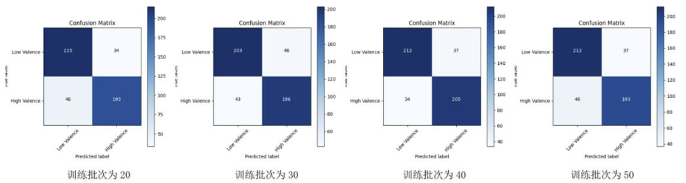
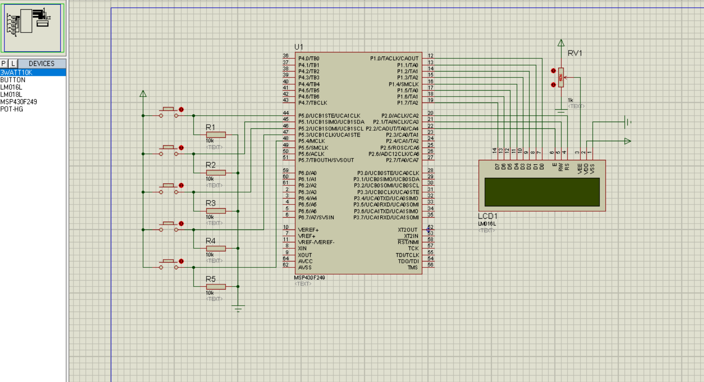

About me
Currently pursuing an M.S. in Electrical Engineering at RPI, expecting to graduate in May 2026.
I am passionate about electrical engineering because it allows me to turn ideas into practical solutions. My undergraduate studies provided a strong foundation in mathematics, physics, circuits, and optics. I also conducted research on AI algorithms, including machine learning, deep learning, and feature selection, which resulted in a related patent and my senior thesis. An internship at ADI in my final year made me realize there is much more to learn in the electronics industry, motivating me to pursue my M.S. at RPI. Here, I have explored topics such as CMOS and Op-Amp circuit design, communication systems, system analysis, and control theory. I am currently working on an indoor localization project using RSSI in my wireless communication class, and I hope to continue research in this field in the future.
Education
M.S. in Electrical Engineering (Merit Scholarship) Jan 2025 – May 2026
GPA: 3.75
- Coursework: Advanced Electronic Circuits; Internetworking of Things; Modern Communication System; VLSI Design; Nonlinear Control Systems; Systems Analysis Techniques
B.Eng. in Electronic Science and Technology (Bell Honors School) Sep 2020 - Jun 2024
- Coursework: Optoelectronics; Semiconductor Physics and Devices; Principles of Laser; Physical Optics; Material Physics; Analog Electronic Circuits; Signals Analysis; Fundamental of Circuit Analysis
Experience
Application Engineer Intern Aug 2023 - Nov 2023
- Programmed a PyQt GUI for the ADIN1100 Ethernet PHY transceiver using MQTT for communication.
- Visualized real-time gyroscope signals using Fast Fourier Transform (FFT) and Hilbert–Huang Transform (HHT).
AI Product Intern Jul 2022 - Aug 2022
- Participated in testing and developing virtual human video generation via a digital twin platform.
- Applied Microsoft’s Xiaoice AI model to train and fine-tune facial expressions, improving avatar realism.
Projects
Course Project, RPI Mar 2025 - Apr 2025
· Stabilized a source measure unit (SMU) source using frequency compensation in LTspice.
· Achieved desired output across a 400 pF–10 µF load capacitor range with bandwidth up to 5 MHz, winning 1st Prize.
Course Project, RPI Mar 2025 - Apr 2025
· Developed a Raspberry Pi system to monitor temperature & humidity (DHT11), light (BH1750), and CO₂ (MH-Z19).
· Implemented MQTT with TLS and AES-CBC encryption, ensuring secure data transmission.
Course Project, RPI Mar 2025 - Apr 2025
· Developed a Sliding Mode Control (SMC)-enhanced backstepping controller in MATLAB.
· Lowered position error by 50% and maintained stability under wind disturbance up to 10 m/s.
Graduation Project, NJUPT Dec 2023 - Jun 2024
· Designed a Transformer Encoder-based model to extract temporal and long-range dependencies from EEG signals.
· Reached 86% accuracy in emotion classification on the DEAP dataset.

https://github.com/DarthEricXD/EEGTransformerCourse Project, NJUPT Feb 2023 - Jul 2023
· Designed circuit schematics in Proteus and programmed MSP430 microcontroller using IAR.
· Processed button inputs and dynamically switched content on LCD1602 display.

https://github.com/DarthEricXD/LCDADScreenCourse Project, NJUPT Feb 2022 - Jul 2022
· Generated high-frequency signals with 555 timers and counted pulses using 74160 for period measurement.
· Managed latch/reset via XC3550AN FPGA and displayed results on 3 C392 common-cathode tubes using CD4511.
Publications
China National Intellectual Property Administration (CNIPA) Jun 28, 2024
https://worldwide.espacenet.com/patent/search/family/081622897/publication/CN114521903B?q=CN114521903B
· Built an EEG attention recognition system using ReliefF, RFECV, and SVM for feature selection and classification.
· Attained 94.5% accuracy and obtained a Chinese patent (CN114521903B).
IEEE Oct 17, 2023
https://ieeexplore.ieee.org/document/10276824
· Constructed a microwave sampler module with ≤ -5dB conversion loss and ≥ 30dBc SFDR for IF < 200MHz.
· Published in the 2023 International Conference on Microwave and Millimeter Wave Technology (ICMMT).
Skills
Programming: Python, C/C++, Verilog
Hardware: Raspberry Pi, PlutoSDR, ESP32
Software & Tools: Ubuntu/Linux, MATLAB, LTspice, IAR, Proteus, Multisim, Xilinx ISE, Cadence Virtuoso
Technical Knowledge: Analog & Digital Circuits (Op-Amp, CMOS, Combinational Logic, RTL Design);
Signal Processing (FFT/DFT, MATLAB/Simulink);
IoT Protocols (MQTT, RFID, ZigBee, TCP/UDP);
System Analysis & Modeling (Linear & Nonlinear Systems, PID & State Feedback Control, System Simulation)